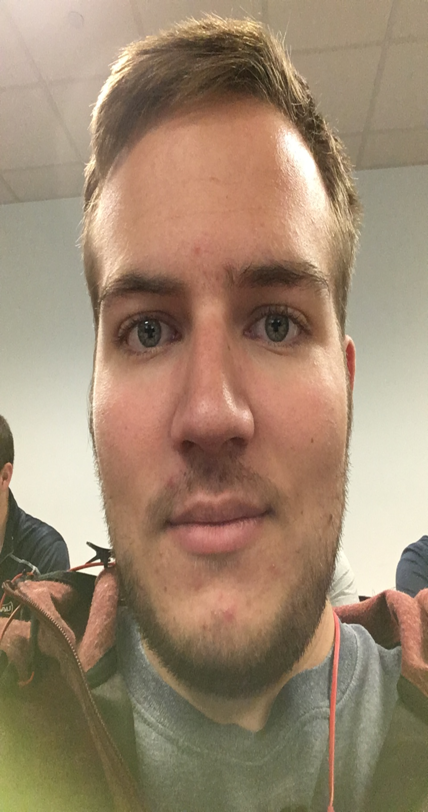

Reddit Analysis
NAU CS499-Network Analysis Project

Reddit is an interesting site where people from all over come together to share content that they enjoy. This content can range from news articles, to clips from video games, and of course clips of animals. Reddit is structured in a way so that it is organized into many different communities, where all the posts in those communities tend to follow some sort of theme. The very best posts from those communities (subreddits) are displayed on the front page where everyone can see them.
For our project, we want to create a network that shows the interconnectedness of Reddit’s communities. For this network, we will use posts that have reached the front page for our nodes, and we will pick these posts from the “top rated for the year” on Reddit’s front page. This should give us an accurate representation of what kind of content is most popular on Reddit. With this information, we can create connections between posts based on similar content. For example, we could connect a post from one subreddit to another if they both feature a cat in their post. We will then cluster the nodes according to their subreddits, which will allow us to see which communities are alike and which are very different.
This information would allow us to see what trends are popular on Reddit in a certain timeframe. It will also visualize the type of content that redditors love and constantly upvote to the front page. We will see what kind of information the users find the most engaging, and it could allow us to see why some posts become so much more popular than others. Depending on what subreddits are most popular, we could potentially draw conclusions on what kind of users make up the majority of Reddit (gamers, sports fans, etc.).
To attain this information, we will use the official Reddit api that is available to download on GitHub. We will grab the top posts from r/all (the front page of Reddit) and begin drawing our network using those posts and correlating them to their respective communities. The api provides a lot of information, including information of comments and user data, but we are mostly interested in just using information about posts and their details.
Josh Shaffer
Computer Science
Erik Strauss
Applied Computer Science
Matthew Quintana
Computer Science & Spanish
CONTACT INFORMATION:
Need to get in contact?
Email: jls865@nau.edu
Email: ems394@nau.edu
Email: mq56@nau.edu